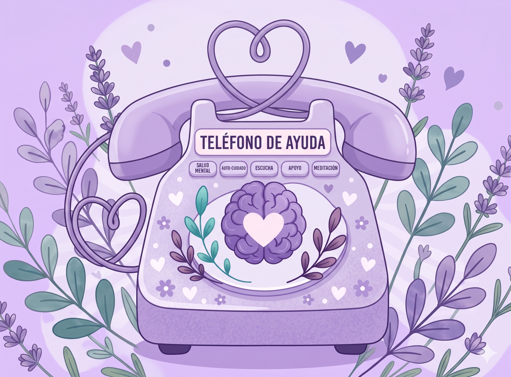
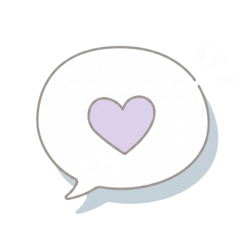
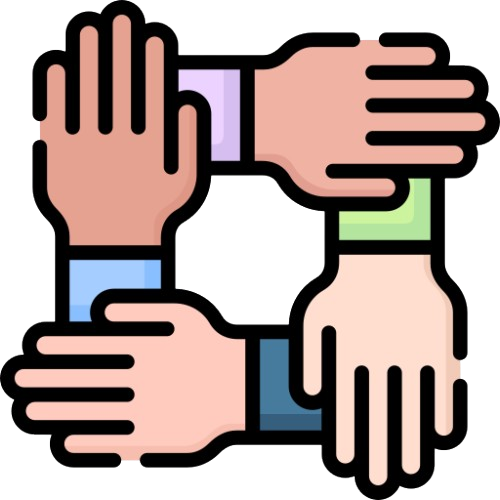
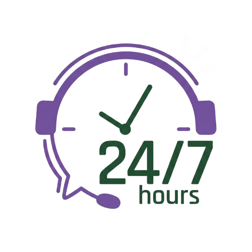
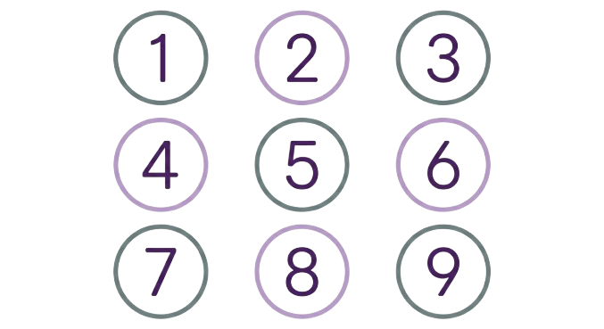
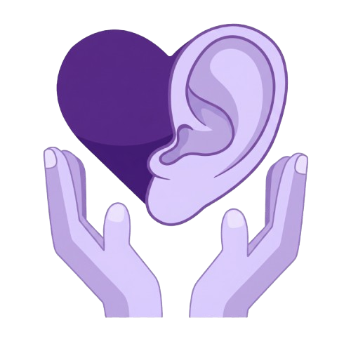

Estás en el lugar correcto
Apoyo cuando
más lo necesitas
Aquí encontrarás recursos, líneas de ayuda y orientación para ti o para alguien que quieres. No tienes que enfrentarlo solo.

Acceso rápido
Opciones de apoyo inmediato

Elige lo que mejor se adapte a lo que sientes ahora mismo.
¿Qué necesitas?
Tipos de apoyo disponibles
Cada camino es diferente. Explora y elige el tipo de apoyo que necesitas hoy.

Ayuda a tus hijos o personas cercanas en sus momentos difíciles, o recibe apoyo de alguien que entiende lo que vives.
Obtén orientación psicológica o psiquiátrica con especialistas certificados.
Aprende cómo ayudar a tus familiares en momentos de dificultad emocional.
Llama ahora
Líneas de ayuda
Todas son gratuitas y confidenciales. Disponibles cuando las necesites.

Historias que inspiran
No estás solo en esto
Pedir ayuda no es fácil. No estoy 100% bien todos los días, pero ahora sé que no tengo que enfrentarlo solo.
Paso a paso
¿Cómo pedir apoyo?
Recuerda: pedir ayuda también es un acto de cuidado hacia ti mismo y hacia los que te rodean.

Reconoce cómo te sientes, sin juzgarte.
Decide pedir apoyo — ese primer paso ya es un logro.
Elige la opción que mejor se adapta a ti en este momento.
Habla y expresa lo que necesitas con honestidad.
Permítete recibir y sanar a tu propio ritmo.
Para quienes apoyan
Consejos para apoyar a alguien
Estar presente para alguien también requiere cuidado y sabiduría.

Escucha sin juzgar. Deja que la persona se exprese sin interrumpir ni minimizar lo que siente.
Valida sus sentimientos. Reconoce que lo que siente es real y válido, aunque no lo entiendas del todo.
Anímalo a pedir ayuda profesional. Sugiere con gentileza que hay personas capacitadas para ayudar.
Acompaña, no presiones. Estar presente es suficiente. No tienes que tener todas las respuestas.
Cuida también de ti. Apoyar a otros es agotador. Asegúrate de atender tu propio bienestar.